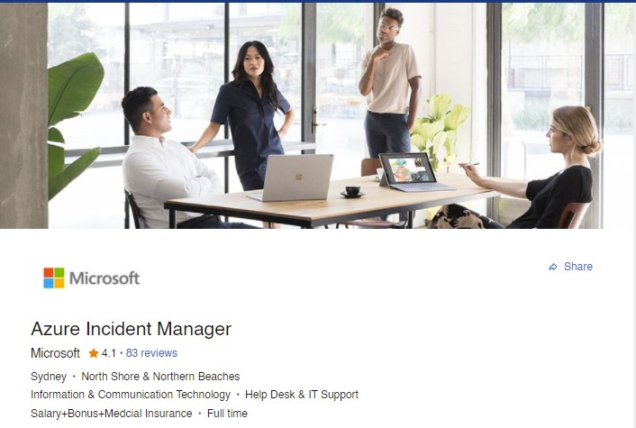

I am currently in an IT Coordinator roll managing two campuses. My school has a unique approach which embraces exploration technology (Bold Park Community School, 2021) in the classroom and allows me time to work with educators and students in testing, failing, and exploring. I looked at two different jobs, one in education and one in a different industry to best explore my future prospects.
This advertisement is for a Head of ICT and Innovation position at Kinocoppal-Rose Bay School. It has a management focus with the listing referencing management of IT projects, assistance to key leadership in deploying an approach to IT in the k-12 teaching and learning and the direct lead to a team of 5.
In my currently roll I am responsible for all the responsibilities outlined in their roll description, but am also the only Full-Time IT staff member so preform all the lower-level day to day tasks from managing repairs to cable management. This position would be a major step in my current career path and offers a larger and more established environment to work in.
The position requires Tertiary qualifications in IT (Essential), Experience leading an IT Department, Knowledge of standard School critical management services, Project management experience, examples of Innovation in and ICT context and experience with integrating ICT into the classroom. These requirements are in line with what is expected from an IT Director (Indeed Editorial Team, 2021) with an emphasis on education experience both in the classroom and with administrative management software.
Of the 10 listed requirements I have experience in 8. Due to my current roll, I have experience Leading an IT Department, working with SMS’s & LMS’s, Verbal and Written communication, ability to communicate technical ideas to a non-technical audience and integrating IT into teaching environments.
Through my other work I have managed Teams and Projects when creating graphics for theatre shows and demonstrated customer experience at my bar.
Although I have experience in several of their requirements for an ideal candidate it is limited with most coming since 2019 and most from 1 employment context. The school I am currently employed at also differs hugely in approach and pedagogy so I assume this would be questioned when applying. To better match the requirements for this roll I would look at gaining a few years' experience working in a similar or lower level positions such as a network engineer or IT Technician at another education institution.
To gain a Tertiary qualification I will complete my studies at RMIT and look at furthering my studies through a Masters. To further support my application, I would look at gaining IT Certification relevant to their IT department ((Half, 2021). This would require a conversation with the Team at Kinocoppal.
To prove that I am a “Strategic thinker and operational innovator” I would look in my current and future roles for ways to explore and prove my ability past the status quo.

Azure is Microsoft's cloud computing platform, which offers over 200 products and cloud services and is used by 95% of Fortune 500 companies across all major industries and government organisations (What is Azure – Microsoft Cloud Services | Microsoft Azure, 2021).
This role is responsible for managing one of Azures Incident Management Teams, and when incidents occurs working with Azure service Teams and Key Stakeholders to restore the service and then investigating the incident to improve the Azure platform for the future. The role requires a broad technical knowledge, analytical and problem-solving expertise, the ability to collaborate with varied partners all under the pressure of a major incident.
For me this would be a significant role in one of the worlds largest companies. The high stress and essentialness of the position would also offer a lot of personal reward and satisfaction.
The role requires a wide variety of technical experience and knowledge including Program management experience; design, scripting, problem solving and debugging skills; knowledge of Azure, AWS and GCP cloud computing platforms; experience building, delivering, and supporting high scale service platforms; and PMP, ITIL, Six Sigma with demonstrated application towards service improvement.
As well as the technical requirements the role requires an incident response skill set including; Crisis management skills with the ability to set priorities and pursue multiple threads, with the goal of working towards a desired outcome; ability to remain calm during stressful situation; and strong collaboration skills across multiple teams and organisations.
The role also requires communication skills with an emphasis of working over multiple time zones, communicating both to the executive level and technical level and to produce reports and analytics on incidents.
The role also requires a bachelor’s degree or 5 years of relevant industry experience.
I currently have no experience on a level relevant for this role.
I have experience with 3 small scale incident responses in my role and have demonstrated many of the skills Microsoft requires in this role. I managed service restoration, communication with relevant stakeholders, both technical and executive level, and post incident investigations, but not on a scale of an Azure outage.
Similarly, I regularly communicate across different teaching teams and share information for various contractors and clients, but not on a global scale.
To pursue this role I would need to look at migrating out of my current role in education and move towards cloud computing or an entry level role at Microsoft with the aim to build my skill set and experience and move up organically.
With my current Bachelor I would need to direct my focus to Cloud computing or look at studying a masters or additional bachelors afterwards to better support my career in cloud computing.
I would also need to look at gaining PMP, ITIL and Six Sigma certification as well as exposure to Azure, AWS and GCP past what I can read on the companies “About” pages.